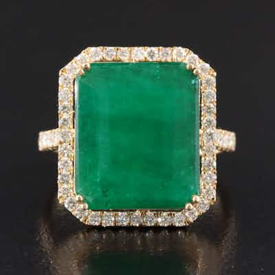

OUTPRICED14K 6.47 CT Emerald and Diamond Ring
14K yellow gold ring with large emerald-cut green stone (claimed 6.47ct emerald) and diamo
0 min left
Current bid$825 · 39 bids
Est. value$762
Your max bid$427
All-in at max$525
Projected close$825
Margin at bid−$222
Details & price history →